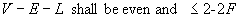

Definition from ISO/CD 10303-42:1992: A closed shell
(IfcClosedShell) is a shell of the dimensionality 2 which typically serves as a
bound for a region in R3. A closed shell has no boundary, and has non-zero
finite extent. If the shell has a domain with coordinate space R3, it divides
that space into two connected regions, one finite and the other infinite. In
this case, the topological normal of the shell is defined as being directed
from the finite to the infinite region.
The shell is represented by a collection of faces. The domain of the
shell, if present, contains all those faces, together with their bounds.
Associated with each face in the shell is a logical value which indicates
whether the face normal agrees with (TRUE) or is opposed to (FALSE) the shell
normal. The logical value can be applied directly as a BOOLEAN attribute of an
oriented face, or be defaulted to TRUE if the shell boundary attribute member
is a face without the orientation attribute.
The combinatorial restrictions on closed shells and geometrical
restrictions on their domains are designed to ensure that any domain associated
with a closed shell is a closed, orientable manifold. The domain of a closed
shell, if present, is a connected, closed, oriented 2-manifold. It is always
topologically equivalent to an H-fold torus for some H
³ 0. The number H is referred to as the
surface genus of the shell. If a shell of genus H has a domain within
coordinate space R3, then the finite region of space inside
it is topologically equivalent to a solid ball with H tunnels drilled
through it.
The Euler equation (7) applies with B=0, because in this case
there are no holes. As in the case of open shells, the surface genus H
may not be known a priori, but shall be an integer ³ 0. Thus a necessary, but not sufficient, condition
for a well-formed closed shell is the following:
